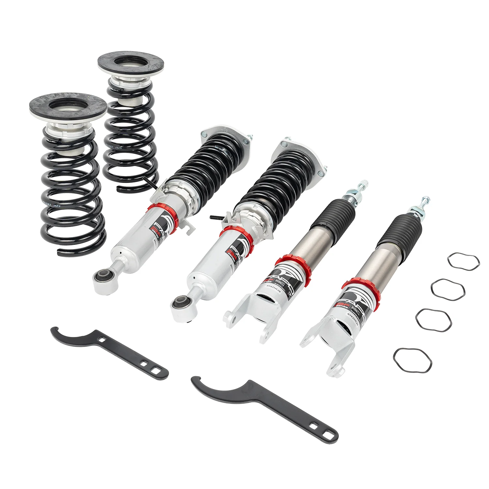

1 / 1432-stopniowe zawieszenie gwintowane Do Nissan 370Z Z34 2008-2021 / Infiniti G37 RWD V36 2008-2013 PF008420
Cechy produktu: Konstrukcja jednorurowa zapewnia większą pojemność oleju i gazu, co zapewnia płynniejszą i wygodniejszą jazdę po ulicy Regulacja wysokości zawieszenia — obniża o 1” do 1,5” w stosunku do wysokości fabrycznej (do 2,5-3” w zależności od podwozia pojazdu) W pełni gwintowana obudowa rury absorbera do niezależnej regulacji wysokości Regulowane napięcie wstępne sprężyny - zalecane napięcie wstępne 7-10 mm…
Features: Mono-tube design provides larger oil and gas capacity for a smoother and more comfortable street ride Ride height adjustable - lowers 1" to 1.5" from factory height (up to 2.5-3" depending on vehicle chassis) Fully threaded absorber tube casing for independent height adjustment Adjustable pre-load spring tension -recommended 7-10mm pre-load before installation Pillow ball top mount reduces noise during tuning and improves steering feel and response High-tensile performance springs tested over 600,000 cycles with less than 0.04% distortion; special surface treatment enhances durability Constructed from T-6061 billet aluminum with anodized finish for superior strength and corrosion resistance All inserts include fitted rubber boots to protect the dampers and keep debris out Improves handling performance without sacrificing ride comfort An effective and affordable upgrade to enhance vehicle appearance Easy installation with proper tools Suitable for track, drift, fast road, and daily driving All accessories shown in photos are included 1-year warranty against manufacturing defects Package Included: Front coilovers × 2 pcs Rear coilovers × 2 pcs Wrench × 2 pcs
2699,99 PLN
Opis produktu
Cechy produktu:
- Konstrukcja jednorurowa zapewnia większą pojemność oleju i gazu, co zapewnia płynniejszą i wygodniejszą jazdę po ulicy
- Regulacja wysokości zawieszenia — obniża o 1” do 1,5” w stosunku do wysokości fabrycznej (do 2,5-3” w zależności od podwozia pojazdu)
- W pełni gwintowana obudowa rury absorbera do niezależnej regulacji wysokości
- Regulowane napięcie wstępne sprężyny - zalecane napięcie wstępne 7-10 mm przed instalacją
- Górne mocowanie poduszki z kulką zmniejsza hałas podczas strojenia i poprawia wyczucie i reakcję układu kierowniczego
- Sprężyny o dużej wytrzymałości na rozciąganie przetestowane w ponad 600 000 cyklach przy odkształceniu mniejszym niż 0,04%; specjalna obróbka powierzchni zwiększa trwałość
- Wykonany z kęsów aluminium T-6061 z anodowanym wykończeniem zapewniającym doskonałą wytrzymałość i odporność na korozję
- Wszystkie wkładki zawierają dopasowane gumowe buty chroniące amortyzatory i chroniące przed przedostawaniem się zanieczyszczeń
- Poprawia właściwości jezdne bez utraty komfortu jazdy
- Skuteczne i niedrogie ulepszenie poprawiające wygląd pojazdu
- Łatwa instalacja przy użyciu odpowiednich narzędzi
- Nadaje się do toru, driftu, szybkiej jazdy i codziennej jazdy
- Wszystkie akcesoria pokazane na zdjęciach są wliczone w cenę
- 1 rok gwarancji na wady produkcyjne
Zawartość zestawu:
- Gwinty przednie × 2 szt
- Gwinty tylne × 2 szt
- Klucz × 2 szt
Features:
- Mono-tube design provides larger oil and gas capacity for a smoother and more comfortable street ride
- Ride height adjustable - lowers 1" to 1.5" from factory height (up to 2.5-3" depending on vehicle chassis)
- Fully threaded absorber tube casing for independent height adjustment
- Adjustable pre-load spring tension -recommended 7-10mm pre-load before installation
- Pillow ball top mount reduces noise during tuning and improves steering feel and response
- High-tensile performance springs tested over 600,000 cycles with less than 0.04% distortion; special surface treatment enhances durability
- Constructed from T-6061 billet aluminum with anodized finish for superior strength and corrosion resistance
- All inserts include fitted rubber boots to protect the dampers and keep debris out
- Improves handling performance without sacrificing ride comfort
- An effective and affordable upgrade to enhance vehicle appearance
- Easy installation with proper tools
- Suitable for track, drift, fast road, and daily driving
- All accessories shown in photos are included
- 1-year warranty against manufacturing defects
Package Included:
- Front coilovers × 2 pcs
- Rear coilovers × 2 pcs
- Wrench × 2 pcs
FAPO Polska
Ten produkt obsługujemy lokalnie
Autoryzowana obsługa
FAPO Polska prowadzi katalog, kontakt i zamówienia bez odsyłania klienta do zewnętrznych sklepów.
Dobór po aucie
Sprawdzamy dopasowanie produktu do pojazdu, rocznika i wersji przed finalizacją zamówienia.
Wsparcie po zakupie
Masz kontakt w Polsce w sprawach zamówień, wysyłki, gwarancji i zwrotów.